|
효빈대학교 교내철도 Hyobin National Univ. Rail (HBNU Rail) |
|
|---|---|
|
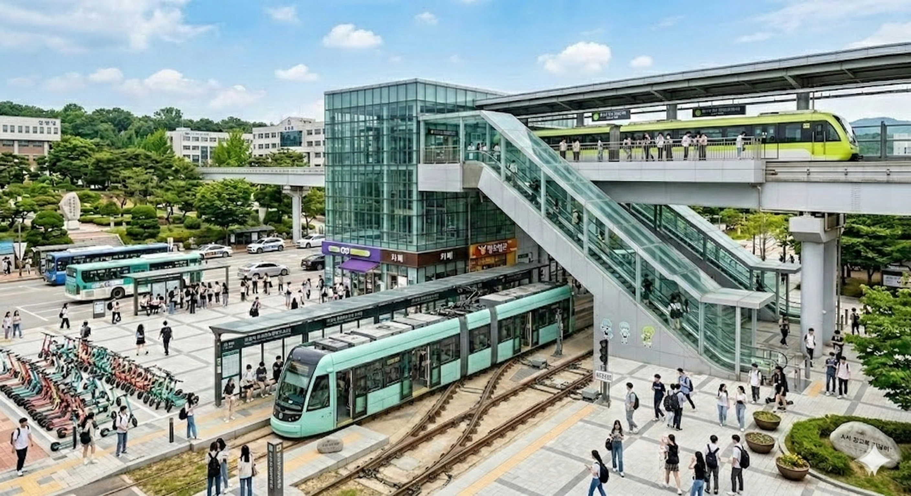 A선 트램(1층 지상)과 B선 모노레일(3층 고가)이 만나는 효빈대 중앙환승장역
|
|
| 운영 기관 | 효빈대학교 교통대학 (HBNU Rail 사업단) |
| 구성 노선 |
🚃 A선 (트램) 🚟 B선 (모노레일) |
| 상징색 |
A선: 민트색 (#a0fff9 / B선: 연두색 (#74f466 / |
| 총 역 수 | 24개 (A선 9개, B선 15개 / 환승역 중복 포함) |
| 운행 차량 |
A선: HBNU-T1000호대 저상트램, 클래식 보존 트램 B선: HBNU-M2000호대 모노레일 ( GALAXY!!, STAR!! 편성 포함)
|
| 차량 기지 |
A선: 수의대 간이검수고 / 중앙환승장 루프선 B선: B01 교통대학 기지 / S-35-4 모노레일 정비센터 |
| 운임 |
무료 (재학생/졸업생/교직원, 학생증 태그) 500원 (외부인) 행사 때는 무료 개방이다 |
| 사용 목적 | 교내 구성원 이동, 교통대학 철도운전·운영·정비 실습 |
"학교가 너무 넓어서 만들었습니다." (A선 슬로건)
"캠퍼스의 하늘을 달리는 은하수." (B선 슬로건)
"타지 않으면 지각이요, 타면 3월 초보 실습생의 급제동에 아메리카노가 날아간다."효빈대생의 딜레마
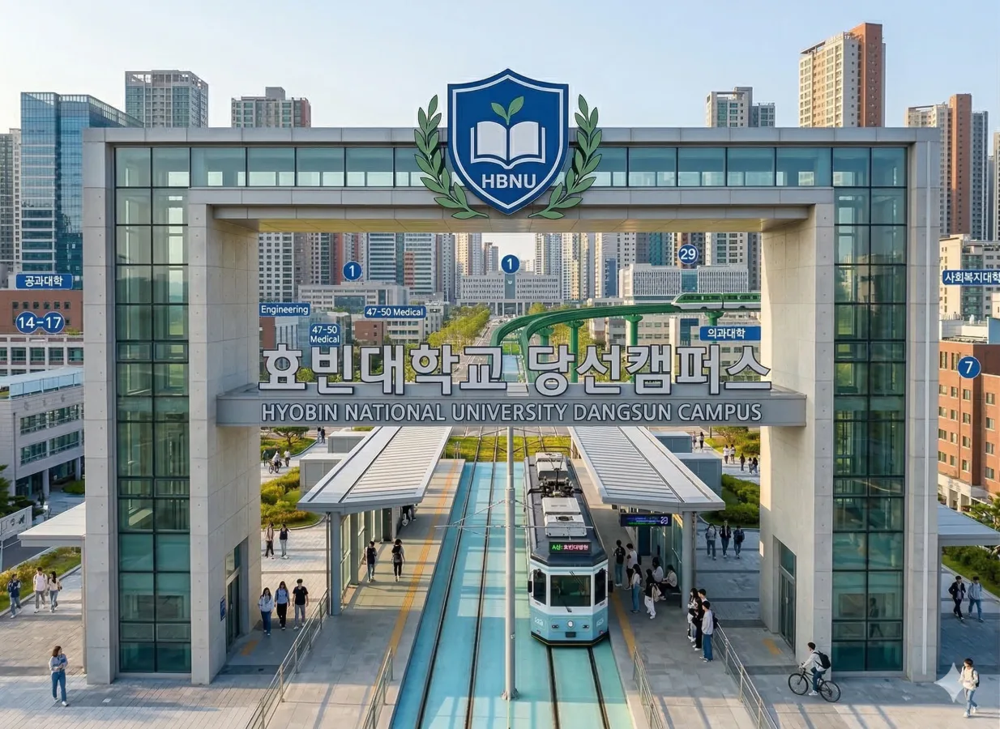
효빈대학교 당선(본)캠퍼스 내를 순환 및 횡단하는 국내 유일의 교내 철도 실습 노선(공식 영문 약칭: HBNU Rail)이자 상주인구 3만 5천여 명(학부생, 대학원생, 교직원, 병원 내원객 포함)의 발이 되어주는 생명줄. 남부 평지 구간(메디컬 타운~공과대학~대학본부)을 동서로 관통하는 A선(노면전차/트램)과, 캠퍼스 외곽 및 북부 구역(인문·사회·예체능·베르데홀·기숙사 클러스터)을 공중 고가로 연결하는 B선(과좌식 모노레일)의 2개 노선으로 구성되어 있다.
단순히 외주 용역 업체에 맡겨 굴리는 통학 셔틀이 아니라, 효빈대학교의 간판 특성화 단과대학인 교통대학(철도운전시스템공학과, 철도운영시스템공학과, 철도차량시스템공학과 등)에서 직접 운영, 관제, 신호 제어, 그리고 중정비까지 총괄한다. 즉, 학부생들이 강의실에서 배운 폐색 이론과 속도-거리 곡선 수식을 바탕으로 직접 마스콘 핸들을 잡고(기관사 실습), 중앙관제실에서 진로를 개통하며(관제사 실습), 차량기지에서 대차를 분해·조립하는(정비사 실습) 거대한 살아있는 실험실(Living Lab)이다.
GALAXY!! 편성 추가 도입)효빈대학교 당선캠퍼스의 가장 큰 특징인 '압도적인 평지'와 '서울대학교 관악캠퍼스급의 거대한 면적(서구 당선동과 북구 소조동에 걸쳐 있음)' 때문에 도보 이동이 사실상 불가능에 가깝다. 캠퍼스 서남쪽 끝의 수의과대학에서 동북쪽 끝의 북부 기숙사까지 걸어가면 성인 남성 걸음으로도 45분이 넘게 걸려 다리에 알이 배기는 연강 지각 사태가 속출하자, 1990년대 후반 교통대학 교수진들이 "이왕 셔틀 굴릴 바에야 우리가 직접 철도를 깔아서 학생들 실습도 시키고 통학도 해결하자!"라며 교육부와 효빈시청, 산학협력단 예산을 영혼까지 끌어모아 2000년 밀레니엄 개강과 함께 A선 노면전차를 개통했다.
이후 2010년대 들어 북부 캠퍼스의 학생생활관(기숙사) 신축과 베르데 홀 건립으로 남북 방향 수송 수요가 폭증했으나, 기존 건물들과 조경수(특히 사회복지대 인근의 50년 된 왕벚나무 군락) 때문에 지상에 선로를 추가로 깔 공간이 나오지 않았다. 이에 제26대 민부선 총장과 교통대학이 손을 잡고 나무와 건물 위를 날아다니는 고가 방식의 B선 과좌식 모노레일을 2018년 개통하면서, 현재의 지상(트램)+공중(모노레일) 입체 교내철도 네트워크가 완성되었다.
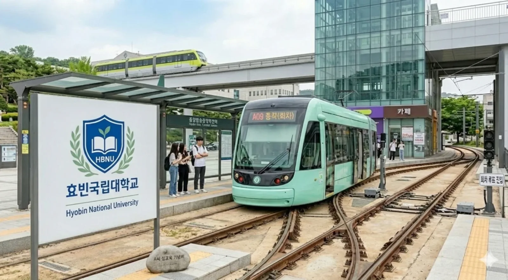
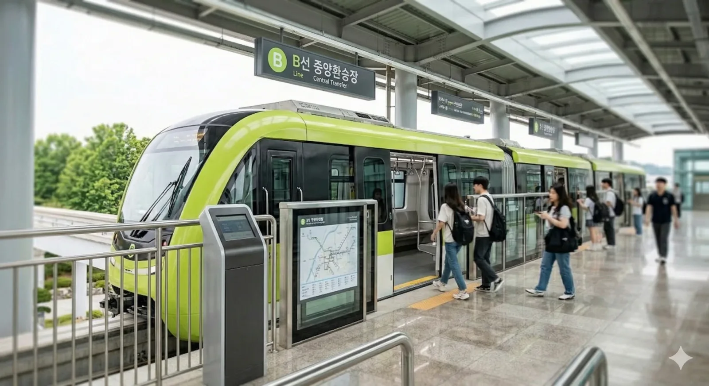
캠퍼스 남쪽 평지 구간을 운행하는 대동맥. 의대생, 공대생들이 콩나물시루처럼 타고 다닌다.
노선색은 민트색(#a0fff9).
| 역 번호 | 역 명칭 | 주요 접근 시설 | 비고 |
|---|---|---|---|
| A01 | 수의대·동물병원 | 수의과대학, 동물병원 | 기점. 2006년 연장 개통. 비교적 한산하다. |
| A02 | 효빈대병원 | 의대, 효빈병원 본관 | ● 7호선 (효빈대입구역) 환승 |
| A03 | 간호대 - 한의관 | 간호대학, 한의학관 | 역명판에 하이픈(-) 표기 |
| A04 | 약대 보건대 | 화학공업대학, 약학대학 | 기호 없이 띄어쓰기 표기 |
| A05 | 화공 전기대 | 기계공업대학, 전기공업대학 | 공대생 승하차 인원이 폭발한다. |
| A06 | 토목대 복지관 | 토목공업대학, 학생복지회관 | 점심시간 혼잡도 최상 (식권 전쟁터) |
| A07 | 대학본부·충승당 | 대학본부 | ● 2호선 (효빈대역) 및 B선(B13) 환승 |
| A08 | 상과대. 학생회관 | 학생회관, 상과대학 | 역명판에 마침표(.)가 찍혀 있다(...) |
| A09 | 효빈대 중앙환승장 | 효빈대중앙환승장 | B선(B06/B15) 환승. 종점 및 회차 루프선. |
캠퍼스 외곽과 북부 기숙사 등 고지대를 공중으로 연결하는 순환선. 벚꽃 시즌에는 B03~B05 구간의 스카이라인 절경이 일품이다.
노선색은 연두색(#74f466).
| 역 번호 | 역 명칭 | 주요 접근 시설 | 비고 |
|---|---|---|---|
| B01 | 교통대학 기지 | 교통대학, 철도운전실습장 | 기점. 제복 입은 실습생이 주류. 갤럭시 전설의 발원지. |
| B02 | 중앙도서관 | 중앙도서관, 박물관 | 시험 기간 심야 24시간 연장 운행 |
| B03 | 사회복지대 | 사회복지학대학 | 🟥 5호선 (소조역) 환승. 박효빈 시장 모교. |
| B04 | 미술사회대 | 미술대학, 음악대학, 디자인대학 | 화구통/악기 든 학생들 다수 탑승 |
| B05 | 법전원 | 법학전문대학원 | 정숙 구간 |
| B06 | 효빈대중앙환승장 | 효빈대중앙환승장 | A선 환승 (중간 경유) |
| B07 | 예술대 | 예술대학, S-35-4 모노레일 정비센터 | 역 옆에 공중 차량기지 위치 |
| B08 | 자연대 | 자연과학대학 | |
| B09 | 베르데홀 | 대강당(베르데홀) | 🟥 5호선 (당선역) 환승. HAF 코스어 성지. |
| B10 | 북부 기숙사 | 학생생활관(기숙사) | 기숙사생 생명줄. 아침 9시 지옥철. |
| B11 | 보건진료소 | 보건진료소, 희다관, 생명과학관 | 역명판에 (별칭: 스미레선) / GALAXY!! Area 표기 |
| B12 | 대운동장 | 대운동장 | 축제 메인 스테이지 |
| B13 | 본부. 충승당 | 대학본부, 충승당 | ● 2호선 (효빈대역) 및 A선(A07) 환승 |
| B14 | 상과대 학생회관 | 학생회관, 상과대학 | A선(A08) 환승 |
| B15 | 효빈대중앙환승장 | 효빈대중앙환승장 | A선(A09) 환승. 종점. |
효빈대학교 교내철도가 타 대학의 흔한 순환버스와 궤를 달리하는 가장 결정적인 이유는, 이 노선 전체가 교통대학 학부생들의 '학점이자 졸업 요건 그 자체'이기 때문이다. 학생들은 1~3학년 동안 전용 강의실에서 신호 제어 알고리즘과 열차 운영론을 피 토하게 배운 뒤, 4학년이 되면 파란색 과잠이나 정복을 입고 실물 트램과 모노레일의 운전석에 앉아 전교생의 목숨(과 커피)을 담보로 실전 평가를 받는다.
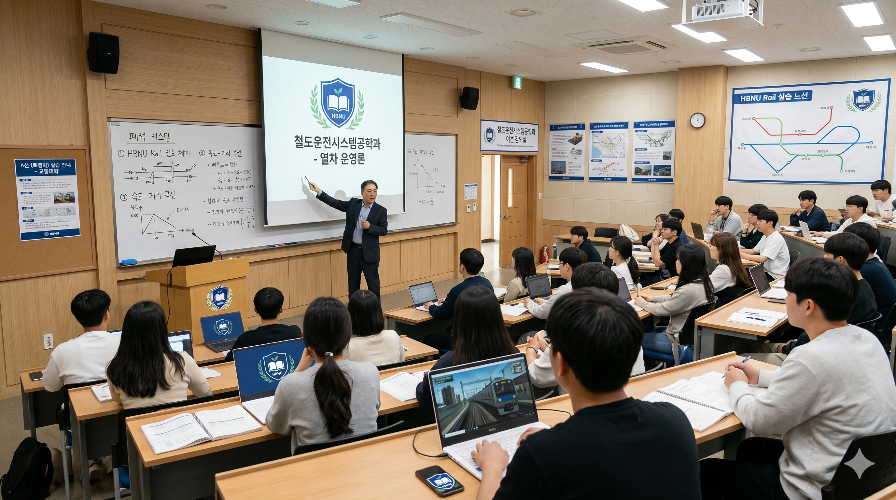
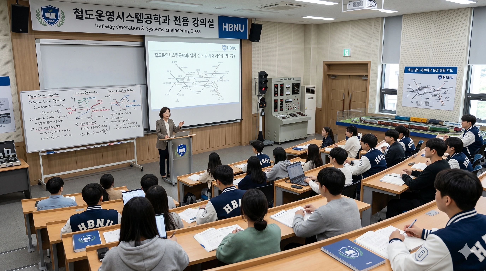
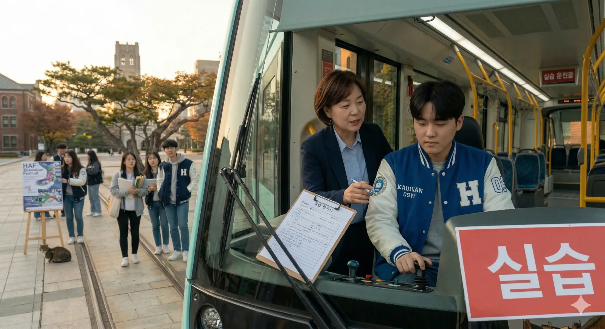
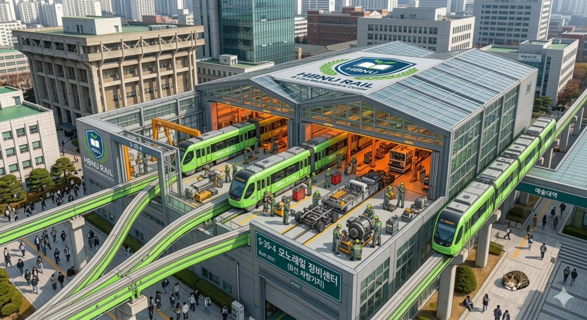
S-35-4 모노레일 정비센터 (Built 2021). 건물 2층 야외 테라스 자체가 모노레일 분기기 및 대차 분해 정비장으로 쓰이며, 우측 하단 광장 바닥에는 조소과 학생들이 만든 소형차 크기의 '초거대 고등어태비 식빵 고양이 벤치'가 놓여 있다.교내철도의 두 노선은 차량 규격부터 실내 분위기, 심지어 전광판에 뜨는 오타(...)까지 각자의 개성이 뚜렷하다. 특히 차내 및 승강장 행선 안내기(PIS) 프로그램은 외주 업체를 쓰지 않고 컴퓨터공학과 및 철도운영시스템공학과 학부생들에게 근로장학금을 주고 코딩을 시켰다가 발생한 주옥같은 오타들이 수정되지 않고 그대로 박제되어 있어, 신입생과 외부 관광객들에게 큰 웃음을 선사한다.
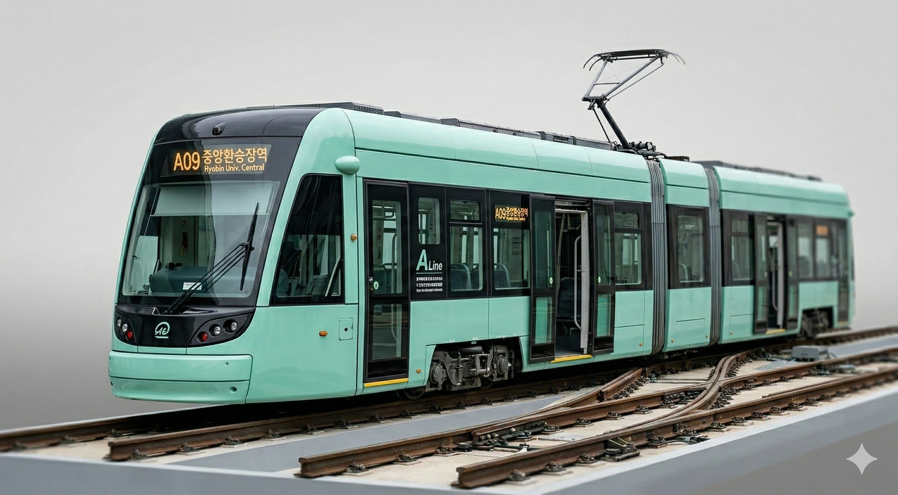
#a0fff9) 도색의 3모듈 초저상 굴절 트램이다.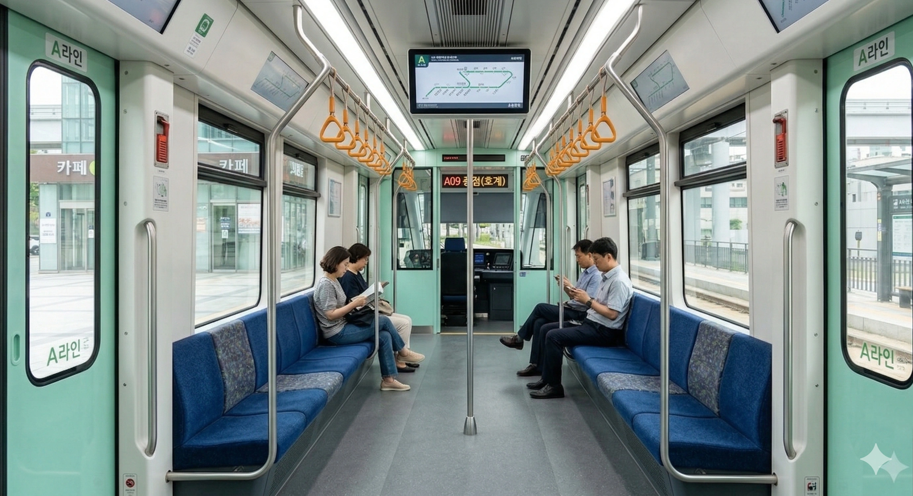
A09 종점(호계)라는 부품 업체 테스트용 더미 데이터가 그대로 떠 있다(...).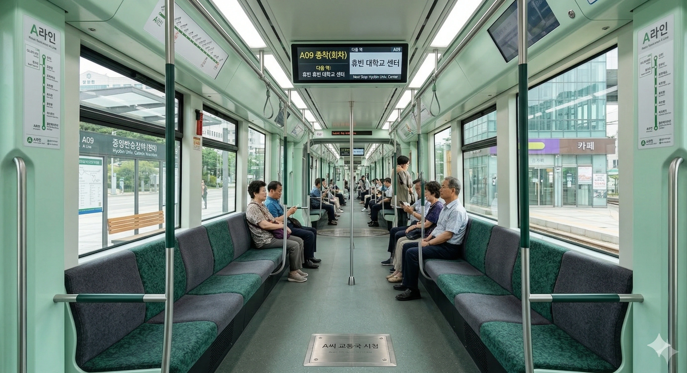
다음 역: 휴빈 휴빈 대학교 센터가 송출 중이다. 바닥 한가운데 박힌 [A씨 교통국 시청] 스테인리스 봉인 명판이 압권.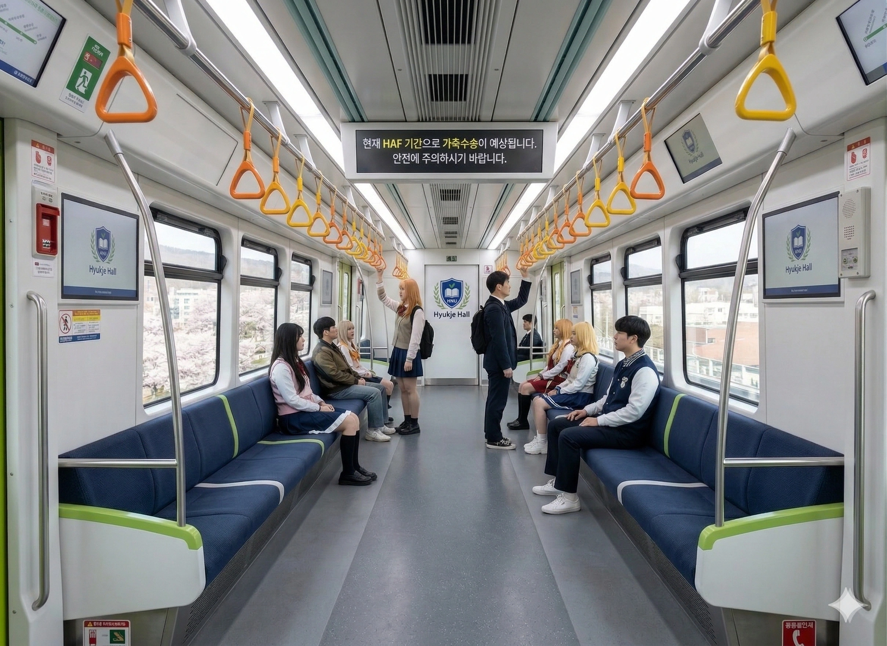
현재 HAF 기간으로 가축수송이 예상됩니다. 안전에 주의하시기 바랍니다.라는 노빠꾸 공식 경고가 떠 있다. 승객들도 코스프레 차림이다.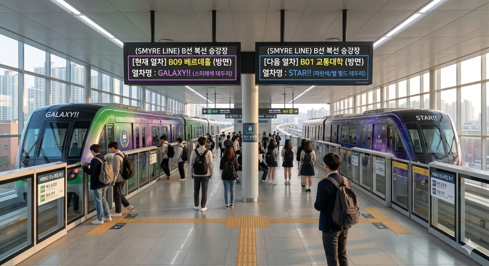
GALAXY!! 특별 편성이, 우측에는 밤하늘 은하수 도색의 STAR!! 특별 편성이 나란히 서 있다. 상단 전광판의 (SMYRE LINE)이라는 거대한 스미레 영문 스펠링 오타가 백미.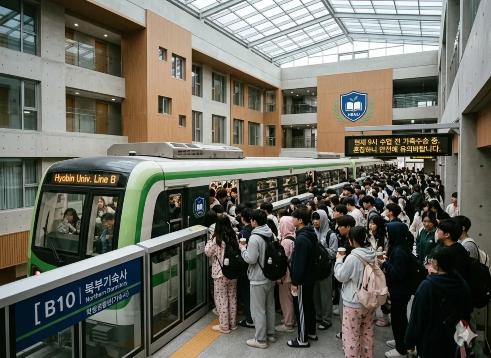
현재 9시 수업 전 가축수송 중. 혼잡하니 얀전에 유의바랍니다.라며 '안전'을 '얀전'으로 오타 낸 공지가 떠 있다.| 구분 | 🚃 A선 (트램 / 쿠쿠선) | 🚟 B선 (모노레일 / 스미레선) |
|---|---|---|
| 차량 형식 | HBNU-T1000호대 (3모듈 1편성 초저상 굴절 노면전차) 구형 단차 클래식 노면전차 (정문 보존 및 특별운행) |
HBNU-M2000호대 (4량 1편성 과좌식 고무타이어 모노레일) 특수 래핑: 제5편성 GALAXY!! 호 / 제6편성 STAR!! 호 |
| 주행 궤도 | 지상 전용 파스텔 블루 매립형 궤도 (교차로 혼용) | 지상 10~15m 고가 콘크리트 궤도빔 (사회복지대 구간 스카이튜브 관통) |
| 주 이용객층 | 의대·약대·간호대·수의대생, 공대생(체크남방 군단), 낮 시간대 병원 방문 어르신 및 원로 교수님 | 기숙사생(수면바지 군단), 사회복지대·인문사회대생, 미대·음대생(대형 화구/악기), 로스쿨생, HAF 코스어 |
| 전설의 오타 및 기물 |
• 천장 모니터: 휴빈 휴빈 대학교 센터• 구형 전광판: A09 종점(호계)• 차내 바닥 명판: [A씨 교통국 시청]• A09역 승강장 화단: [A씨 참교육 기념비] 자연석
|
• 천장 모니터: 현재 HAF 기간으로 가축수송이 예상됩니다• B10역 전광판: 혼잡하니 얀전에 유의바랍니다• B13역 전광판: (SMYRE LINE) B선 복선 승강장• B01/B11역: GALAXY!! 외침 환영 / 전설 계승 구역
|
워낙 캠퍼스가 크다 보니 웬만한 도시철도 노선들과 유기적으로 연계되어 있다.
교내 인프라의 핵심이다 보니 지역 정치권과 얽힌 전설적인 사건 사고들이 끊이지 않는다. 모두 한 집안 소행이다
2024년 5월, B09 베르데홀역 인근에서 윤대환의 아들 윤재훈 추종자 A씨가 결식아동용 빵(엠마의 빵)에 침을 뱉고 성우 등신대를 파손하려 한 희대의 테러 사건. 현장에 있던 조리과학과, 식품영양학과 학생들에게 식칼(칼집 상태)과 국자로 물리적 제압을 당했다. 성우들이 이 꼴을 볼 뻔했으나 수천 명의 학우들이 "메카쿠시테!!!(눈 가려!!!)"를 외치며 인간 바리케이드를 쳐 막아냈다.
총선에서 5.2%라는 경이로운 득표율로 참패한 윤재훈 본인이 만취 상태로 운행 중인 A선 선로에 뛰어든 자살 미수 사건. 시속 40km로 달리던 트램의 철도운전학과 4학년 실습생이 풀 브레이킹과 모래 뿌리기(샌딩)를 시전해 코앞 5cm에서 멈춰 세웠다. 정작 멈춰 서자 윤재훈은 공포에 질려 바지에 오줌을 지렸고(...), 물리학과와 교통공학과 교수진들이 "트램 질량이 500배인데 너는 가루가 됐을 것"이라며 팩트 폭격으로 조리돌림했다.
A선과 B선이 만나는 효빈대 중앙환승장(A09/B06/B15) 광장에서 A씨가 "효빈시는 두청운수 시절이 전성기였다"며 어그로를 끈 사건. 사회복지대(친위대) + 교통대(철도 수호대) + 필리핀어학과가 포위망을 쳤고, 부동산학과 C교수가 난입해 "내가 두청운수 때문에 학회 날려먹은 사람이야, 이 XX야!!" 라며 학문적/물리적 사형 선고를 내리며 A씨를 학교에서 영구 제적시켜버렸다.
개별 노선인 효빈대 A선과 효빈대 B선에서 벌어진 사건들 외에도, 두 노선이 하나의 거대한 교내철도 통합 관제 시스템(HBNU CTC) 아래 맞물려 돌아가면서 탄생한 범(汎)캠퍼스급 대소동들이 존재한다. 아래는 효빈대 100년 역사에 길이 남을 교내철도 7대 레전드 에피소드다.
위쪽 인포박스와 노선 정보에 첨부된 효빈대 중앙환승장역 사진을 보면 알 수 있듯, 이 역은 지상 1층의 A선 트램 승강장(A09)과 지상 3층 고가의 B선 모노레일 승강장(B06/B15)이 초장대 유리 에스컬레이터로 직결된 거대한 입체 복합 환승 센터다. 역 건물 1층에는 보라색 간판의 편의점(CU)과 카페, 떡볶이집이 입점해 있고, 광장 좌측에는 시내버스 환승 정류장과 수백 대의 민트색·주황색 공유 킥보드 군단이 도열해 있다. 덕후들 사이에서는 민트색 A선(탕 쿠쿠)과 연두색 B선(헤안나 스미레)이 위아래로 포개어져 만난다 하여 성스러운 '쿠쿠스미(Keke & Sumire) 대통합의 장'으로 추앙받지만, 정작 매주 화·목요일 연강(연속 강의)이 걸려 있는 일반 재학생들에게 이곳은 단 10분의 쉬는 시간 안에 캠퍼스 남단(공대·의대)에서 북단(사회대·인문대·자연대)으로 공간 이동을 해야 하는 지옥의 환승 계주장이다.
문제의 발단은 A선(철도운전시스템공학과 1분반 담당)과 B선(2분반 담당)의 배차 간격이 평시 10분, 첨두시 5분으로 운행되는데, 두 분반 실습생들의 정시 운전 실력 차이 때문에 환승 타이밍이 묘하게 30초 차이로 어긋나는 '쿠쿠스미 불화설(환승 불발)'이 자주 터진다는 점이다. 예를 들어 공과대학(A05)에서 오전 10시 50분에 전공 수업이 끝난 학생이 사회과학대학(B03)에서 11시 정각에 시작하는 교양 수업을 들으려면, 10시 52분 A선 트램을 타고 10시 55분에 중앙환승장역 1층(A09)에 내린 뒤, 정확히 45초 만에 3층 B선 승강장(B06)으로 뛰어 올라가 10시 56분 출발 모노레일을 잡아타야만 지각을 면할 수 있다. 그런데 A선 실습생이 정위치 정차를 버벅대느라 문을 15초 늦게 열거나, 반대로 3층 B선 실습생이 "정시 출발은 기관사의 생명이다!"라며 칼같이 출입문을 닫아버리면, 에스컬레이터 중간쯤 올라가던 수백 명의 환승객들이 눈앞에서 떠나가는 연두색 모노레일의 꽁무니를 보며 집단으로 절규하는 대참사가 벌어지는 것이다.
이 환승 실패 비극이 절정에 달했던 2024년 1학기 중간고사 직전 화요일 오전 10시 55분, 1층에 도착한 A선 트램의 문이 열리자마자 200여 명의 환승객들이 3층으로 올라가는 에스컬레이터를 향해 쇄도했는데, 하필 그 시각 3층 B선 승강장에서는 모노레일의 출발 벨(차임벨)이 울리기 시작했다! 그 순간, 에스컬레이터 맨 앞에서 뛰어가던 체육교육과 육상부 학우가 뒤를 돌아보며 "학우 여러분!! 지금 제가 먼저 올라가서 몸으로 스크린도어 센서 막고 있겠습니다!! 포기하지 말고 뛰십시오!!"라고 외친 뒤, 에스컬레이터 계단 세 칸씩을 한 번에 뛰어오르는 초인적인 각력으로 단 8초 만에 3층 승강장에 도달해 닫히던 모노레일 출입문 앞에 당당히 발을 들이밀었다(...). 물론 실제 출입문에 몸을 끼운 것은 아니고, 승강장 끝에 서 있던 B선 역무 실습생에게 "야 임마!! 지금 밑에서 쿠쿠선 환승객 200명 올라오고 있어!! 출발 보류 무전 때려!!"라고 사자후를 지른 것이다.
이 절규를 들은 3층의 B선 기관사 실습생은 운전실 창문 너머로 에스컬레이터를 타고 꾸역꾸역 솟구쳐 올라오는 인파를 확인하고는, 즉시 출입문을 다시 활짝 열고 차내 마이크로 "현재 1층 A선에서 올라오시는 환승 학우님들을 위해 본 열차 40초간 출발 대기하겠습니다! 쿠쿠와 스미레는 싸우지 않습니다! 천천히 걸어오십시오!"라는 감동적인 안내방송을 송출했다. 덕분에 200명의 학생들이 단 한 명의 낙오자도 없이 전원 환승에 성공했고, 열차가 출발할 때 차내에서는 기관사 학우를 향한 기립박수가 터져 나왔다. 이 사건 이후 교통대학 통합관제실은 아예 매시 50분~정각 사이의 수업 교대 시간에는 1층 A선 트램이 A09역에 도착해 문을 연 시점으로부터 최소 90초 동안은 3층 B선 모노레일이 무조건 출발을 대기하도록 강제 연동시키는 '쿠쿠스미 평화 협정 알고리즘(상호 대기 연동 폐색)'을 신호 시스템에 정식 도입하여 연강 환승 지옥을 영구히 해결했다.
효빈대 교내철도를 처음 타보는 신입생이나 외부 성지순례객들이 가장 먼저 스마트폰 카메라를 꺼내 찍는 것은 아름다운 캠퍼스 풍경이 아니라, 차내와 승강장 전광판 곳곳에 도사리고 있는 정신 나간 오타들의 향연이다. 앞서 사진들로 확인했듯, A선 구형 차량에는 A09 종점(호계)가, A선 신형 차량 천장 모니터에는 다음 역: 휴빈 휴빈 대학교 센터가, B10 북부기숙사역 전광판에는 혼잡하니 얀전에 유의바랍니다가, 그리고 B13 본부. 충승당역 대형 행선판에는 (SMYRE LINE) B선 복선 승강장이라는 총체적 난국의 텍스트들이 버젓이 송출되고 있다. 국가거점국립대학교이자 철도 특성화 S등급 대학의 간판 시설에 어떻게 이런 어처구니없는 오타들이 동시다발적으로 박히게 되었는지에 대해서는, 2021년 겨울방학에 벌어진 이른바 '교통대×컴공과 근로장학생 72시간 무수면 핫식스 코딩 사건'이라는 눈물 없이는 들을 수 없는 비화가 숨어 있다.
당시 교통대학은 2021년 S-35-4 모노레일 정비센터 완공 및 A선 2차분 신형 트램 도입에 맞춰, 교내철도 전 노선의 행선 안내 표출 시스템(PIS)을 통합 업그레이드하기로 결정했다. 그런데 외주 솔루션 업체가 부르는 시스템 구축 비용이 무려 3억 원에 달하자, 예산을 아끼려던 교통대 학장님이 컴퓨터공학과 학장님과 술잔을 기울이며 "우리 학교 똑똑한 컴공과 애들이랑 우리 철도운영과 애들 묶어서 겨울방학 특별 근로장학 프로젝트로 시키면 인건비 1,500만 원에 떡을 치지 않겠소?"라는 마법의 아이디어를 낸 것이다(...). 결국 시급 1만 원의 특별 근로장학금에 낚인 컴퓨터공학과 3학년 박 학우와 철도운영시스템공학과 3학년 최 학우 단 두 명이, 개강 사흘 전까지 A선 역 9개와 B선 역 15개, 그리고 전동차 12개 편성의 자막 표출 DB와 C++ 제어 코드를 전부 짜야 하는 지옥의 독박 야근에 투입되었다.
마감 당일 새벽 4시, 이미 70시간째 잠을 자지 못해 빈 몬스터 에너지 캔 24개가 책상 위에 피라미드처럼 쌓여 있던 관제 서버실에서 대참사가 터졌다. 먼저 컴공과 박 학우가 A선 종점 역명 문자열을 입력하면서 반수면 상태로 손가락이 미끄러져 '효빈'을 '휴빈'으로 쳤고, 심지어 역명 앞에 붙어야 할 노선 접두사 출력 함수를 잘못 복사해 붙이는 바람에 print(univ_name + " " + univ_name + " 대학교 센터")가 되어 휴빈 휴빈 대학교 센터라는 전설의 중복 문자열이 컴파일되어 버렸다! 같은 시각, 옆자리에서 B선 승강장 안내문구를 타이핑하던 철도운영과 최 학우는 1교시 기숙사 혼잡 경고문을 치면서 눈이 감겨 '안전'을 '얀전'으로 치고 엔터를 눌렀으며, 하이라이트로 B13역 전광판 상단에 들어갈 '스미레선' 영문 헤더를 넣으면서 "야 스미레 영어로 스펠링이 뭐냐?"라고 묻자, 의식을 잃어가던 박 학우가 "몰라 임마 스카이(SKY)랑 타이어(TIRE) 합쳐서 SMYRE겠지..."라고 헛소리를 한 것을 곧이곧대로 믿고 (SMYRE LINE)이라고 하드코딩해 버린 뒤 기절하듯 잠든 것이다(...). 심지어 A선 1차분 차량은 마감 시간인 오전 8시까지 업로드할 시간이 모자라자, 중고 전광판 납품 업체(본사가 안양시 동안구 호계동에 있었다!)가 넣어둔 테스트 롬(ROM) 데이터인 종점(호계)를 덮어쓰지도 못한 채 개강 첫차에 투입해 버렸다.
개강 당일 오전 9시, 새로 바뀐 전광판을 본 전교생이 뒤집어졌고 에브리타임에는 1분 만에 "우리 학교 오늘부로 휴빈휴빈대학교로 교명 변경됨 ㅋㅋㅋ", "스미레가 왜 SMYRE냐고 일어일문학과 뒷목 잡는다", "얀전에 유의하래서 오늘부터 얀데레 컨셉 잡는다"라며 인증샷 수백 장이 올라왔다. 얼굴이 새파래진 교통대 학장님이 즉시 서버실로 달려가 두 학생의 등짝을 스매싱하며 당장 수정 패치를 올리라고 호통을 쳤으나, 반전이 일어났다. 총학생회와 방송부가 실시한 긴급 설문조사에서 재학생의 94.8%가 "이 오타들은 밤샘 코딩에 갈려 나간 학우들의 피와 땀이 서린 예술 작품이자 효빈대만의 유쾌한 밈이므로 절대 고치지 말고 영구 보존해 달라!"라고 청원한 것이다! 결국 민부선 총장님까지 나서서 "오타 하나에도 학우들의 추억이 깃들면 그것이 곧 대학의 역사다. 단, 영문 안내 자막(Hyobin Univ. Center)만 외국인 유학생들을 위해 정상 표기하고 한글 오타는 문화유산으로 남겨두라"고 재가하면서, 이 대환장 오타 파티는 오늘날까지 효빈대 교내철도의 가장 사랑받는 마스코트(?)로 살아남게 되었다.
위쪽 4.1문단에 첨부된 철도운영시스템공학과 전용 강의실 사진을 보면, 타 대학 공대 강의실에서는 상상도 할 수 없는 진귀한 물건들이 강의실 뒤편과 우측 창가에 자리 잡고 있다. 교탁 바로 오른쪽 뒤편에는 성인 남성 키보다 큰 실제 철도 보안용 '3현시 색등 신호기(녹색·황색·적색)'와 은색 철제 연동 제어반(Relay Interlocking Rack)이 버젓이 서 있고, 우측 창가 긴 테이블 위에는 A선 트램과 B선 모노레일, 그리고 캠퍼스 건물들이 정교하게 축소 제작된 초대형 철도 모형 디오라마가 설치되어 있는 것이다. 일반 학우들은 저 신호기와 모형이 단순히 불만 들어오는 장식용 교보재인 줄 알지만, 놀랍게도 저 장비들은 실제 밖에서 굴러다니는 효빈대 교내철도(A선·B선)의 중앙관제실(CTC) 서버와 실시간 광케이블로 미러링(연동)되어 있는 진짜배기 관제 장비다!
즉, 밖에서 실제 B선 모노레일이 교통대학 기지역(B01)을 출발해 제1폐색구간에 진입하면, 강의실 안에 서 있는 실물 3현시 신호기가 '철컥!' 하는 우렁찬 릴레이 접점 소리와 함께 녹색(진행)에서 적색(정지)으로 실시간 변환되며, 동시에 창가의 모형 디오라마 위를 달리는 미니어처 모노레일도 실제 열차의 GPS 및 궤도회로 위치와 100% 동기화되어 똑같은 속도로 움직인다. 이 경이로운 시스템은 철도청 신호연구실장 출신인 김OO 교수님이 "관제학도는 강의실에 앉아서도 현장 열차의 숨결을 느껴야 한다"며 직접 납땜과 배선을 해가며 구축한 역작인데, 문제는 이 시스템이 너무나도 리얼하다 보니 수업 도중 실제 밖에서 벌어지는 열차 운행 사고나 지연이 강의실 안에서 실시간 생중계되는 기막힌 상황이 벌어진다는 점이다.
가장 유명한 일화는 2025년 1학기 '열차 신호 및 제어 시스템' 전공 수업 도중에 터졌다. 당시 김 교수님이 프로젝터 화면을 띄워놓고 신호 제어 최적화 알고리즘($\text{Signal Control Algorithm}$)을 열강하고 계셨는데, 갑자기 강의실 구석의 실물 신호기가 '철컥! 철컥! 삐이이이ㅡ!!' 하는 경보음과 함께 적색 등이 미친 듯이 점멸하기 시작했고, 우측 창가의 디오라마 위를 달리던 A선 미니어처 트램이 화공 전기대역(A05) 모형 앞에서 급정거한 채 꼼짝도 하지 않는 것이었다! 강의실에 있던 40명의 과잠 입은 학생들이 일제히 고개를 돌려 신호기와 모형을 쳐다보았고, 김 교수님은 분필을 내려놓더니 미간을 찌푸리며 제어반 모니터의 로그 코드를 확인하셨다. 그리고는 깊은 한숨과 함께 강의실 인터폰(실제 A선 운전실과 직통으로 연결된다!) 수화기를 들고 나지막이 말씀하셨다. "어이, 지금 A선 102열차 운전대 잡은 4학년 박OO 군. 너 방금 화공 전기대역 진입하면서 ATS(자동열차정지장치) 확인 버튼 3초 안에 안 눌러서 비상제동 걸렸지? 지금 내 수업 듣는 네 후배 40명이 강의실 디오라마로 네가 멈춰 서서 쩔쩔매는 거 실시간으로 다 구경하고 있다. 복귀 스위치 돌리고 정신 똑바로 안 차려?!"
수화기 너머로 실제 트램 운전석에 앉아 있던 4학년 선배의 다급한 "죄, 죄송합니다 교수님!! 지금 바로 제동 완해하고 출발하겠습니다!!"라는 애절한 목소리가 강의실 스피커를 통해 쩌렁쩌렁하게 울려 퍼졌고, 3초 뒤 디오라마 속 미니어처 트램이 다시 칙칙폭폭 움직이기 시작하자 강의실에 있던 2·3학년 후배들은 책상을 치며 자지러지게 웃음을 터뜨렸다. 이 사건 이후 철도운전학과 4학년 실습생들 사이에서는 "낮에 운전 실습 나갈 때 절대 ATS나 신호 위반하지 마라. 실수하는 순간 철도운영과 후배들 강의실 신호기에 빨간불 켜지면서 디오라마로 전국구 공개 처형당한다"라는 피의 계명이 내려오게 되었으며, 반대로 철도운영과 학생들은 수업이 지루할 때마다 창가 디오라마를 보며 "오, 오늘 B선 선배 칼정차 지렸다", "앗 A선 선배 또 정지선 넘겼다 ㅋㅋㅋ"라며 실시간 스포츠 중계를 즐기는 고상한(?) 취미를 갖게 되었다.
효빈대학교의 공식 상징 동물(교수)이 '고양이'라는 점은 널리 알려진 사실이지만, 그중에서도 교내철도(HBNU Rail) 일대를 호령하는 최고의 권력묘(猫)는 단연 예술대역(B07) 옆 S-35-4 모노레일 정비센터(B선 차량기지)에 상주하는 12살짜리 거대 고등어태비 길고양이 '대차(Bogie) 교수님(애칭: 태비 기지장님)'이다. 2018년 B선 개통 당시부터 차량기지 식당에서 정비 실습생들이 바치는 특식 연어 캔과 닭가슴살을 받아먹으며 자란 이 고양이는, 현재 체중이 무려 9.8kg에 육박하는 경이로운 풍채를 자랑한다. 특히 이 고양이 기지장님은 철도차량시스템공학과 학생들이 2층 야외 정비 테라스에서 모노레일 구동 대차와 견인전동기를 분해·조립할 때마다 어슬렁거리며 나타나, 분해해 놓은 대형 볼트 상자 옆에서 근엄하게 '식빵 자세'를 굽고 앉아 학생들의 토크렌치 작업 상태를 매섭게 감시하는 것으로 유명하다.
문제는 이 태비 기지장님의 카리스마와 덩치가 너무나도 압도적이다 보니, 정비센터 바로 옆 건물을 쓰는 예술대학 및 미술대학 조소과 학생들까지 이 고양이의 열렬한 팬이 되어버렸다는 것이다. 급기야 2023년 가을 졸업작품전을 앞두고 조소과 4학년 학생 5명이 "우리 캠퍼스 최고의 마스코트인 태비 기지장님의 영험한 식빵 자태를 영원히 기리자!"라며 의기투합하여, 실제 고양이 크기의 **15배 스케일(길이 2.2m, 폭 1.4m, 높이 1.1m — 거의 경차 모닝만 한 크기다!)**에 달하는 초대형 조형물을 제작하기에 이르렀다. 게다가 조소과 학생들의 광기 어린 장인정신이 발휘되어, 단순히 딱딱한 청동이나 돌로 만든 것이 아니라 내부에는 고탄성 우레탄 폼을 채우고 외부에는 방수 처리된 최고급 인조 모피(Fur)를 한 땀 한 땀 심어 넣어, **멀리서 보면 영락없는 거대 괴수 고양이인데 앉아보면 세상에서 제일 푹신한 야외 소파 벤치**를 탄생시킨 것이다! (실제로 위쪽 4.1문단 우측 하단 차량기지 사진의 예술대역 앞 광장 보도블록 위에 떡하니 앉아 있는 그 거대 고등어태비 고양이가 바로 이 조형물이다!)
이 초대형 식빵 고양이 벤치가 S-35-4 모노레일 정비센터 앞 광장에 설치되던 첫날, 캠퍼스에서는 웃지 못할 대소동이 벌어졌다. 당시 고가 궤도를 달리던 B선 모노레일 위에서 창밖을 내려다보던 타 단과대 신입생들이 광장 한복판에 웅크리고 있는 2.2m짜리 극사실주의 고양이를 보고는 "헉!! 생명과학관(B11) 유전자 조작 실험실에서 거대 돌연변이 고양이가 탈출했다!!"라며 비명을 질렀고, 야간에 순찰을 돌던 신임 청원경찰 아저씨는 손전등을 비췄다가 호랑이만 한 고양이 눈빛(야광 반사 안구를 박아놓았다!)과 마주치고는 그 자리에서 주저앉아 무전기로 119 포획단 출동을 요청할 뻔했다(...).
더욱 골때리는 장면은 날씨가 화창한 낮 시간대에 연출되는데, 진짜 살아있는 9.8kg짜리 오리지널 '태비 기지장님'이 광장으로 마실을 나와 자기 모습을 본떠 만든 2.2m짜리 거대 고양이 조형물의 머리 꼭대기 위에 올라가 똑같은 자세로 2단 합체 식빵을 굽고 앉아 있는 진풍경이다. 이 초현실적인 '마트료시카 식빵 고양이' 사진을 찍기 위해 전국의 애묘인들과 사진작가들이 B07 예술대역으로 몰려들자, 교통대학 측은 아예 정비센터 1층 외벽에 고양이 기지장님 전용 자동 급식기와 열선 하우스를 마련해 주고 명예 기지장 임명장까지 수여했다. 현재 효빈대생들 사이에서는 "시험 보러 가기 전 예술대역 광장의 거대 고양이 벤치 엉덩이를 세 번 쓰다듬고 그 위에 앉아 계신 진짜 기지장님께 츄르를 바치면 전공 시험에서 찍는 문제마다 정답을 맞춘다"는 미신이 절대적인 진리로 통하고 있다.
개요 문단 최상단에 걸려 있는 효빈대학교 당선캠퍼스 정문 사진은 전국의 철도 동호인(철덕)들과 사진작가들에게 일명 '죽기 전에 반드시 찍어야 할 대한민국 철도 사진 성지 1위'로 꼽히는 마스터피스 뷰포인트다. 거대한 사각 아치 형태의 현대식 유리·콘크리트 정문(상단에 효빈대 HBNU 방패 엠블럼과 월계관이 빛나고 있다) 바로 아래로는 파스텔 블루 색상의 A선 전용 궤도가 일직선으로 뻗어 있고, 정문 아치 바로 뒤편 상공으로는 초록색 교각을 타고 달리는 B선 모노레일의 급곡선 고가 궤도가 하늘을 가로지르며, 저 멀리 배경으로는 대학본부(1동)와 공과대학(14-17동), 의과대학(47-50동), 베르데홀(29동), 사회복지대학(7동) 건물들이 대평원 위에 파노라마처럼 펼쳐져 있기 때문이다.
특히 이 정문 구간에서 철덕들을 미치게 만드는 주인공은 평소 주력으로 다니는 현대식 저상 트램(HBNU-T1000호대)이 아니라, 하루에 딱 4번(오전 9시, 낮 12시, 오후 3시, 오후 5시 정각)만 정문 특별 인입선을 통해 모습을 드러내는 '구형 단차 클래식 트램(통칭 백년호)'이다. 각진 레트로풍 차체에 동그란 외눈박이 전조등, 그리고 하늘색과 크림색 투톤 도색을 자랑하는 이 아름다운 노면전차는, 과거 1968년 폐선된 구 효빈전차의 말기 차량 도면을 바탕으로 2000년 A선 개통 당시 산학협력단이 복원 제작한 1세대 전동차다. 평소에는 수의대 검수고 박물관 동에 모셔져 있다가, 2025년 효빈대학교 개교 100주년을 기념하여 최신 VVVF 제어 장치로 심장(전동기)만 개조한 뒤 정문~대학본부 구간 스페셜 셔틀로 부활한 것이다.
문제는 지상에서 이 레트로풍 '백년호' 트램이 정문 아치를 통과하는 바로 그 찰나의 순간에, 상공의 초록색 고가 궤도 위로 연두색 B선 모노레일이 정확히 동시에 지나가는 '1960년대 노면전차와 2020년대 미래형 모노레일의 시공간 초월 입체 교차 샷'을 한 프레임에 담기가 하늘의 별 따기만큼 어렵다는 점이었다. 두 노선의 배차 간격과 신호 주기가 미세하게 다르다 보니, 이 완벽한 교차 구도가 나오는 확률이 일주일에 한두 번꼴에 불과했던 것이다. 이로 인해 2025년 봄에는 전국에서 몰려든 철도 사진작가 100여 명이 대포만 한 망원렌즈와 삼각대를 들고 정문 앞 육교와 보도블록을 점거한 채 매일같이 진을 치는 소동이 벌어졌다.
이를 지켜보던 교통대학 소속 학내 철도 연구 동아리 『레일루미네(Rail-Lumine)』 부원들과 철도운영시스템공학과 관제 실습생들이 마침내 칼을 빼 들었다. 그들은 "우리 학교 정문의 아름다움을 찍으러 온 손님들을 빈손으로 돌려보낼 수 없다!"라며, 아예 매주 토요일 낮 12시 정각을 '공식 골든 크로스(Golden Cross) 포토타임'으로 지정하고 고도의 관제 컨트롤에 돌입한 것이다. 토요일 낮 11시 59분이 되면, 관제실 실습생이 지상의 클래식 트램 기관사 학우와 공중의 B선 모노레일 기관사 학우에게 동시 무전을 날려 "자, 현재 정문 전방 150m 지점! 트램은 시속 18km 유지하고 모노레일은 3초간 역행 끄고 타행 운전! 하나, 둘, 셋, 지금 정문 아치 동시 진입!!"이라며 0.1초 단위의 칼같은 싱크로나이즈드 주행을 지휘했다. 그 결과 지상에서는 클래식 트램이 '땡땡!' 하는 낭만적인 타종(종소리)을 울리며 정문을 빠져나오고, 정확히 그 머리 위 고가 궤도에서는 B선 모노레일이 '갤럭시!!' 경적을 울리며 유유히 교차 통과하는 기적의 명장면이 매주 토요일 정오마다 100% 확률로 연출되었다. 이 골든 크로스 타임이 입소문을 타면서 현재 효빈대 정문은 주말마다 수백 명의 카메라 셔터 소리가 폭죽처럼 터지는 효빈광역시 최고의 철도 관광 명소로 군림하고 있다.
효빈대학교는 학문적 역량뿐만 아니라, 과거 두청운수의 폭거와 윤대환·윤재훈 부자의 혐오 정치를 시민의 힘으로 심판하고 동문인 박효빈 시장을 배출해 낸 '민주주의와 대중교통 수호의 성지'라는 엄청난 정치적·사회적 자부심을 가진 대학이다. 특히 재학생들의 투표 열기는 전국 대학 중 압도적 1위를 자랑하는데, 문제는 캠퍼스 부지가 워낙 광활하여 행정구역상 남쪽 절반은 **효빈광역시 서구 당선1동**에, 북쪽 절반(기숙사 및 인문·사회대)은 **북구 소조동**에 걸쳐 있다 보니, 선거일이나 사전투표일만 되면 기숙사생들과 자취생들이 자신의 주민등록상 지정 투표소(당선1동 주민센터 또는 소조동 복합커뮤니티센터)를 찾아가느라 대혼란을 겪는다는 점이었다.
이 문제를 해결하기 위해 2024년 제22대 국회의원 총선거 사전투표일 당시, 정치외교학과 학생회장 김시연이 이끄는 사회과학대학 학생회와 사회복지학대학 학생회, 그리고 교통대학 학생회가 삼각 동맹을 맺고 역사에 길이 남을 '주권 수호 교내철도 투표 특급(Voting Express) 대작전'을 발동했다. 이들은 선관위의 적법성 검토를 거친 뒤, 사전투표 이틀 동안 A선 트램과 B선 모노레일의 모든 편성 전면에 [민주주의 급행 - 투표소 직결] 헤드마크를 달고 배차 간격을 평시 10분에서 3분으로 대폭 단축시키는 초강수를 두었다!
작전의 디테일은 가히 군사작전을 방불케 했다. 먼저 북부 기숙사(B10)에 거주하는 6,500명의 학우들이 B선 모노레일에 탑승하면, 차내에서는 정외과와 행정학과 학생들이 일일 차장으로 동승하여 "학우 여러분! 서구 당선동 투표소로 가실 분은 B13(본부. 충승당역)에서 내리셔서 2호선 효빈대역 출구로 나가시고, 북구 소조동 사전투표소로 가실 분은 B03(사회복지대역)에서 내리셔서 5호선 소조역 환승 통로로 직진하시면 단 3분 만에 기표소에 도착합니다! 신분증 안 챙기신 분은 지금 바로 모바일 신분증 앱 켜십시오!"라며 족집게 동선 브리핑을 해댔다. 심지어 당시 서구 선거구에 출마했던 무소속(혹은 군소) 빌런 윤재훈이 "대학생 놈들이 투표를 많이 하면 내가 불리하다!"라며 캠퍼스 외곽 도로에서 확성기 유세차로 시내버스 진입을 방해하는 꼼수를 부렸으나, 도로 교통과 완전히 분리된 공중 고가 궤도(B선)와 교내 전용 궤도(A선)를 통해 시간당 4,000명의 대학생 유권자들이 막힘없이 투표소로 무한 수송되는 바람에 윤재훈의 방해 공작은 먼지 한 톨만큼의 타격도 주지 못했다.
더욱 압권이었던 것은 투표를 마치고 손등에 빨간 도장을 찍고 돌아오는 학우들에게 주어진 교내철도만의 특전이었다. 투표 확인증을 보여주거나 손등 도장을 인증하고 A선·B선에 탑승한 학우들에게는, 조리과학과와 식품영양학과가 구워낸 '민주주의 수호 단팥빵'과 차가운 제로콜라가 무료로 지급되었으며, 차내 모니터에서는 각 단과대별 실시간 추정 투표율 그래프가 중계되어 학생들의 승부욕에 불을 질렀다. 그 결과 해당 선거에서 효빈대학교 소재지인 서구 당선1동과 북구 소조동의 20대 청년 투표율은 무려 89.4%라는 대한민국 선거사상 전무후무한 대기록을 작성했고, 혐오 정치를 일삼던 윤재훈은 득표율 **5.2%**(선거비 전액 미보전 파산 크리)라는 처참한 성적표로 완벽하게 참교육을 당했다. 이 쾌거 이후 효빈대 교내철도는 단순한 교통수단을 넘어 '청년 주권을 실어 나르는 민주주의의 철마(鐵馬)'라는 영예로운 별칭을 얻게 되었다.
여담 문단에도 짧게 언급되어 있듯, 효빈대학교 내 모든 학생회관 매점과 1층 중앙환승장 편의점(CU), 그리고 베르데 홀 카페에서는 부동의 판매량 1위를 자랑하는 전설의 학내 PB(자체 브랜드) 빵이 판매되고 있다. 바로 생활과학대학 식품영양학과와 지역 제빵 명장이 공동 개발한 『엠마의 트램 탑승 통단팥빵 & 녹차크림빵 (가격: 1,500원)』이다. 빵 포장지에는 녹색 모노레일(B선)과 민트색 트램(A선)을 배경으로 미소 짓고 있는 캐릭터 일러스트가 그려져 있고, 빵 윗면에는 귀여운 **A선 트램 모양의 화이트초콜릿 명판**이 콕 박혀 있으며, 무엇보다 포장지 안에 **효빈대 교내철도 역대 차량 및 마스코트 홀로그램 띠부띠부씰(총 45종)**이 무작위로 1장씩 들어 있어 학생들과 교수님들, 심지어 민부선 총장님까지 극악의 확률인 'SSR 등급: 정문 백년호 황금 트램 씰'을 뽑기 위해 매일같이 빵을 사 먹는 진풍경이 펼쳐진다. 또한 이 빵의 판매 수익금 전액은 사회복지학대학을 통해 지역 결식아동 멘토링 간식 지원 사업에 기부되는 그야말로 성스러운 빵이다.
그런데 2024년 11월의 어느 날, 학생회관(A08/B14역 인접) 1층 매점에서 재학생들의 역린(逆鱗)을 건드리는 흉악한 사건이 발생했다. 당시 외부에서 몰래 숨어들어온 악성 리셀러 겸 어그로꾼(과거 제적당한 A씨의 추종 세력으로 밝혀졌다)이 매점 진열대에 놓여 있던 『엠마의 트램 탑승 팥빵』 50여 개를 사지도 않고 **손가락으로 빵 한가운데(화이트초콜릿 트램 명판 부분)를 꾹꾹 찔러 박살 내고, 몰래 포장지 귀퉁이를 찢어 띠부띠부씰만 빼가는 일명 '빵 테러 및 씰 도둑질'**을 저지른 것이다! 마침 점심시간에 빵을 사러 매점에 들어섰던 철도차량시스템공학과 덩치 큰 복학생 3명이 산산조각 난 트램 초콜릿 명판과 짓뭉개진 단팥빵들의 참상을 목격하고는 그 자리에서 눈이 뒤집혔다.
복학생들이 "야 이 개XX야!! 네가 인간이냐!! 감히 트램 명판을 부수고 애들 기부금 빵을 짓눌러?!"라며 사자후를 지르자, 당황한 범인은 훔친 띠부씰 뭉치를 움켜쥐고 매점 밖으로 튀어나가 **마침 A08 상과대. 학생회관역에 정차해 있던 A선 트램에 올라타 도주를 시도**했다. 하지만 하필 그 범인이 올라탄 도주 수단이 **교통대학 학생들이 100% 통제하는 교내철도**였다는 것이 그의 인생 최대의 실수였다(...). 매점 앞 복학생의 다급한 제보 전화를 받은 중앙관제실(CTC) 실습생은 즉각 전 노선에 **'코드 레드(Code Red: 성물 팥빵 훼손범 도주)'**를 발령했고, 범인이 탄 A선 104열차의 기관사 실습생에게 무전을 날렸다. *"104열차 기관사 학우! 현재 2호차에 트램 팥빵 테러범이 탑승했다! 다음 역인 A07 대학본부·충승당역에서 출입문 열지 말고 그대로 문 잠근 채 대기하라! 현재 본부에서 최종 보스가 출격하셨다!"*
1분 뒤, 열차가 대학본부·충승당역(A07)에 도착했으나 출입문은 열리지 않았고, 승강장 밖에는 1번 건물(대학본부)에서 한달음에 달려 나온 경찰행정학과 학생들과 청원경찰들, 그리고 그 정중앙에 **양복 상의를 벗어 던지고 팔소매를 걷어붙인 제26대 민부선 총장님**이 서슬 퍼런 표정으로 팔짱을 끼고 서 계셨다! 평소 온화한 덕후 할아버지 같던 민 총장님은 출입문이 열리고 경행과 학생들에게 양팔이 붙잡혀 끌려 나온 범인의 주머니에서 구겨진 트램 띠부띠부씰들이 쏟아져 나오는 것을 보자, 안경을 고쳐 쓰며 얼음장 같은 목소리로 일갈하셨다. **"이 학교에서 내 얼굴에 침을 뱉는 것은 용서할 수 있어도, 아이들에게 갈 빵을 짓밟고 학우들이 사랑하는 교내철도의 상징을 모욕하는 자는 절대 용서치 않는다. 법무팀장, 합의는 없다. 재물손괴 및 절도, 업무방해로 즉각 형사 고소하고, 훼손된 빵 50개 값의 100배를 징벌적 손해배상으로 청구해 결식아동 기금에 보태라!"**
이 사이다 참교육 현장을 차내에서 직관한 학생들은 창문을 두드리며 "총장님 빛부선!!", "트램 빵 수호자 만세!!"를 연호했고, 민 총장님은 그 자리에서 본인 사비(법인카드 아님)로 매점의 남은 빵 300개를 전량 매입해 놀란 트램 승객들에게 일일이 나눠주셨다. (참고로 그때 총장님이 마지막으로 집어 든 빵에서 그토록 염원하던 **'SSR 백년호 황금 트램 씰'**이 나와 총장님이 어린아이처럼 만세를 불렀다는 훈훈한 후일담이 있다.) 이 사건 이후 매점 진열대 위에는 총장 직인이 찍힌 경고문인 **『경고: 트램과 빵은 효빈대의 영혼입니다. 훼손 시 교내철도 전 노선 포위망이 가동됩니다』**가 붙게 되었으며, 효빈대에서 빵과 철도를 건드리는 것은 곧 사회적 자살 행위라는 불문율이 전국에 각인되었다.
GALAXY!! 외침 환영 - 갤럭시 전설의 발원지가 공식 등재되어 실습생들이 합법적으로 외치고 다닌다(...).